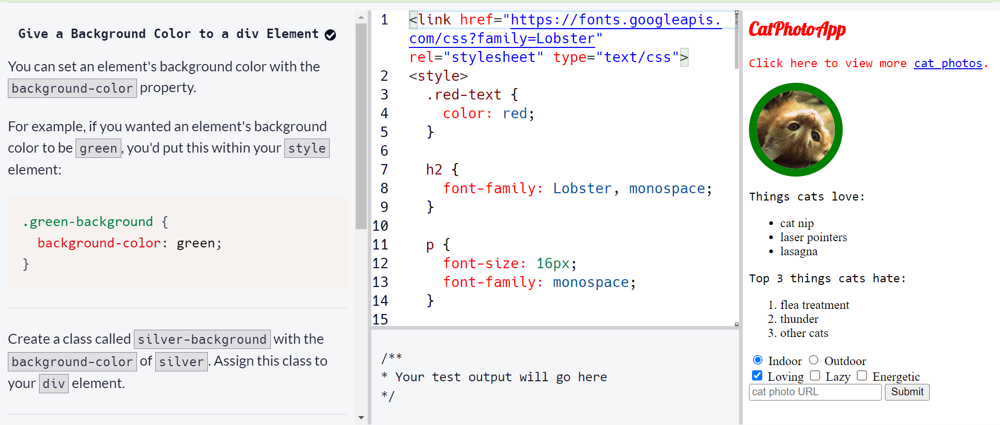
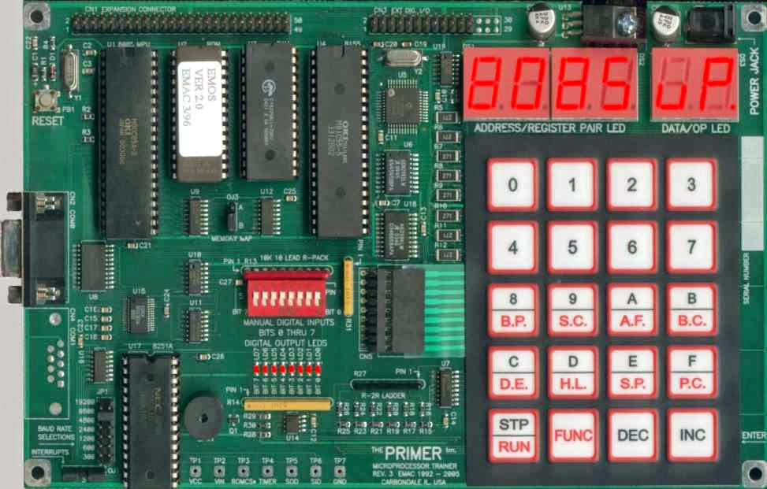
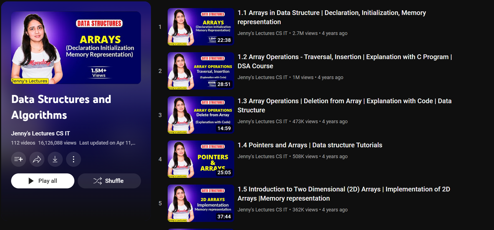
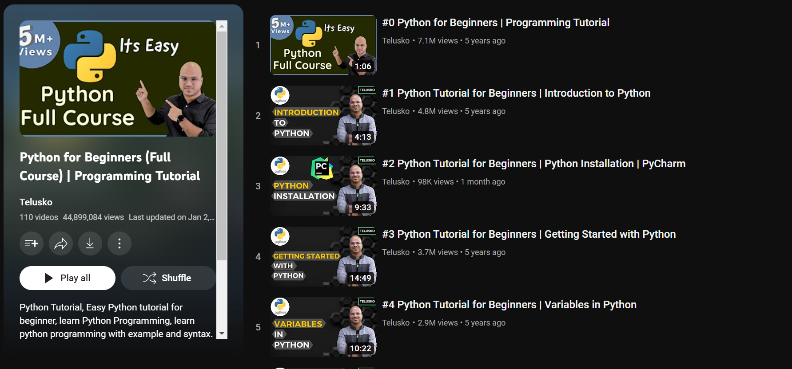
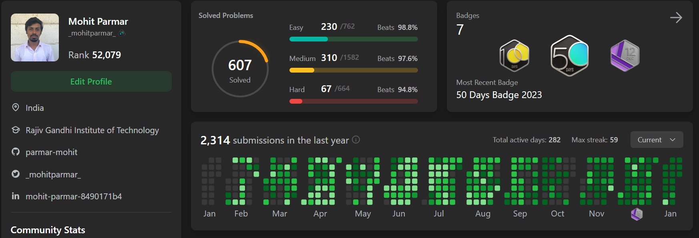

Chapter 1: Doubts and Debugging: The Reality Check
April 2018 marked the beginning of a pivotal chapter in my life. Fresh out of my SSC exams, vacation stretched ahead, offering a realm of possibilities. Yet, uncertainty lingered about the career path I should tread. Fueled by a desire for self-improvement, I decided to delve into the world of coding.Amidst the leisurely days, the realization struck that upskilling might be the key. Opting for the abundant free resources available online, I set out to learn coding without shelling out a penny. A simple Google search for "learn coding for free online" led me to the doorstep of "freecodecamp," a virtual haven for coding enthusiasts.
HTML became my first conquest, swiftly followed by a dalliance with CSS. The initial learning curve felt like a breeze, and within 15-20 days, I found myself navigating the intricacies of these languages with newfound confidence. The thrill of these victories sparked a realization – perhaps a career in computer engineering beckoned.Venturing further into the realm of programming, I stumbled upon a course on a paid platform. The instructor demystified the basics using JavaScript, and once again, the learning process seemed deceptively simple. Buoyed by this success, I entertained the idea that I might have found my calling.
However, the plot thickened as recommendations pointed me toward the venerable C programming language. Initially, it seemed approachable, but the tide turned when concepts like arrays, pointers, and dynamic memory allocation entered the fray. The struggle to grasp these notions cast a shadow over my enthusiasm, and doubt crept in.Yet, amidst the confusion and frustration, I came to understand that the journey was as much about the valleys as it was about the peaks. The initial turbulence laid the foundation for a deeper connection with coding, unveiling the true essence of the odyssey that had just begun.
Chapter 2: Embracing the College Coding Adventure
As the sun set on my leisure-filled vacation, Mithibai College emerged as the arena for my computer science journey. Choosing it as my vocational course, I dived headfirst into the realm of C++. With the echoes of my prior dance with C still ringing in my ears, mastering the syntax of C++ felt like reuniting with an old friend.However, the journey had its challenges, and pointers once again became the formidable gatekeepers to my understanding. Yet, this time, something magical happened. The fog that had shrouded concepts like arrays and dynamic memory allocation in my C days began to dissipate. The struggles were transforming into stepping stones to clarity.Practical sessions were a revelation. From crafting star patterns to weaving intricate diamonds on the screen, these exercises weren't just academic; they were the crucible in which my understanding of loops and if statements was forged. My programming logic, once a flickering flame, began to burn brightly, casting away the shadows of uncertainty.
The second year at Mithibai was a deeper dive into the world of C++. Object-oriented programming, file input and output streams – these were not just abstract concepts anymore. The curriculum also unveiled the enigmatic realm of microprocessors, with the 8085 microprocessor standing as a symbol of both challenge and conquest. Assembly language, initially a maze of complexity, became a language I could speak, thanks to perseverance and practice.
These two years weren't just about courses and exams; they were a metamorphic journey. Every challenge, every line of code, and every triumph sculpted my understanding of C and C++, refining my programming logic. As I walked through the college corridors, little did I know that each step was leading me to the doorstep of the next thrilling chapter in my coding odyssey.
Chapter 3: Embracing the Unexpected Turns
As my time at Mithibai came to a close in 2020, I found myself standing at the crossroads, preparing to embark on the journey of HSC exams and MHT-CET, the gateway to engineering colleges. Little did I know that the world would soon be gripped by the unforeseen chaos of the COVID-19 pandemic.As the pandemic unfolded, throwing exam schedules into disarray, I found myself grappling with boredom and uncertainty during the lockdown. The decision to delay my exam preparations until the dates were confirmed opened up a realm of free time. Restless at home, I turned to programming, determined to dive deeper into the craft.
The internet served as my guide, presenting a roadmap to becoming a software engineer: Learn a Language, Master Data Structures and Algorithms, Build Projects, Create a Resume, and Apply for Jobs. With a foundation in C++, I ventured into the uncharted territory of Data Structures and Algorithms. Struggling to find useful resources, I stumbled upon a game-changer – a DSA playlist by Jenny's CS/IT YouTube channel. Suddenly, the intricate world of data structures began to unravel, and algorithms became more than just abstract concepts.
Projects came next, simple endeavors sans graphical interfaces, but each line of code written in the console was a step forward. Yet, with the exam dates still elusive, I decided to expand my language repertoire. Python, with its growing demand and versatility, beckoned. Telusko's YouTube channel became my mentor, providing an awe-inspiring playlist on Python. The syntax was a departure from the familiarity of C++, with no pointers and a dynamically typed nature. In just 10-12 days, I completed the entire playlist.Java soon followed, seamlessly slipping into my repertoire. The foundation laid by C and C++ made the process surprisingly smooth. In a mere month, I added two new languages to my coding toolkit.
With the exams finally on the horizon in October 2020, I plunged into intense preparations. Although the exams didn't unfold as seamlessly as I hoped, the relief of completion was palpable. Once again, free time beckoned with the delayed results and admission processes. Intrigued by the vast world of technology, I discovered the significance of database management systems and the power of Structured Query Language (SQL). Freecodecamp came to the rescue once again, offering a comprehensive 4-hour video that demystified the intricacies of SQL.As the curtain fell on exams, a new chapter opened, filled with coding languages, algorithms, and the foundations of database management. The journey, though unexpected, was becoming a narrative of resilience, adaptability, and a relentless pursuit of knowledge.
Chapter 4: Embracing the Unplanned Journey

The anticipation of college life led me to Rajiv Gandhi Institute of Technology for my Computer Engineering journey, a choice that wasn't my first but marked the beginning of a new chapter. The initial excitement was tempered by the realization that the first three semesters would be a whirlwind, an attempt to catch up on lost time due to delayed exams and admissions. Online lectures and exams became the norm, creating an intense atmosphere.The freshman year was no cakewalk, with subjects spanning physics, chemistry, maths, and electrical engineering basics. The only respite was C Programming, a realm I was already comfortable navigating. Despite the academic chaos, I found solace in honing the skills I had acquired during the lockdown, a period where every line of code was a step towards mastery.
As the second year unfolded, we delved into the core subjects of our department: Data Structures, Database Management Systems (DBMS), Object-Oriented Programming with Java, and Python. Surprisingly, my curiosity had led me to explore these topics beforehand, making the coursework feel like a breeze. While the struggle to acquire new skills persisted due to the demanding schedule, I immersed myself in developing projects.The transition to the department marked the end of offline lectures and the beginning of a new era. Meeting friends in person, individuals I had only conversed with through WhatsApp, added a personal touch to my college experience. Despite the academic demands, my team and I managed to bring concepts to life, developing projects such as a Grocery Shop Billing System and an Airline Ticket Reservation System. Drawing from my expertise in Java and SQL, these projects became a testament to the practical application of my knowledge.
As the second year concluded, two years of engineering had passed in a blink. The journey, though not what I initially envisioned, had become a mosaic of unexpected challenges and triumphs. Every project, every line of code, and every connection forged in the college halls were threads weaving a unique narrative, one that spoke of resilience, adaptation, and the unyielding pursuit of growth.
Chapter 5: Unleashing Creativity in a Month-Long Break
After two years of intensive studies, a much-awaited month-long vacation finally unfolded. Armed with a repertoire of programming languages and a solid grasp of data structures, I felt a yearning to dive into something new. That's when I stumbled upon the captivating world of Android Application Development.
I began my journey with Google's free resources, and while they were helpful, I hungered for a more comprehensive understanding. Enter CodeWithHarry's YouTube channel and his meticulously crafted playlist on Android App development. Covering all the major concepts, the journey culminated in creating a music player application. This time, a sense of satisfaction and confidence washed over me – I could now venture into crafting my own Android applications.With application development skills under my belt and time still ticking before college resumed, I embarked on a personal project – the School App. It became a playground for practicing Android development and refreshing my understanding of Java and databases. The thrill of seeing an idea manifest into a functioning app fueled my passion for coding even more.
As the Android School App project reached completion, a new challenge loomed on the academic horizon – our university-mandated academic project. After insightful discussions with our project guide, we settled on the seemingly straightforward task of building a Timetable generator. Little did we realize that what seemed like a routine project would unfold into an exploration of complexity.Initially brushing off the challenge, we soon discovered that timetable generation was far from a walk in the park. The more we delved into the intricacies, the more we grasped the depth of the problem. The realization hit us that timetable generation is an NP Hard problem, a puzzle with constraints that defy polynomial-time solutions. Undeterred, we plunged into research and unearthed the potential of an AI algorithm – the Genetic Algorithm.
The project morphed from a seemingly simple task into an exploration of the intersection between computer science and artificial intelligence. We embraced the challenge, blending our coding skills with the nuances of an algorithm that mimicked the principles of natural selection. The journey wasn't just about solving a problem; it was about embracing the complexity and finding innovative solutions.In the end, our academic project became a testament to the resilience of learning, the thrill of problem-solving, and the power of embracing challenges head-on. The unexpected twists in the coding odyssey continued, leaving me hungry for more and eager to unravel the mysteries of the ever-evolving tech landscape.
Chapter 6: Unleashing the Power of Learning
Another month-long break beckoned, and this time I set my sights on the captivating realm of Machine Learning. Serendipitously, LinkedIn offered a golden opportunity with six months of free premium access for college students. This came as a game-changer, unlocking the doors to LinkedIn Learning's vast library. The premium membership became a boon, providing me with unfettered access to a treasure trove of courses in Artificial Intelligence and Machine Learning.As college reopened, the focus shifted back to our ambitious timetable generator project. Progress was made, but with the impending on-campus recruitment season in the next semester, I sensed the need to fortify my problem-solving skills. Enter LeetCode.
I made a commitment to tackle at least one LeetCode problem daily. Recognizing the power of consistency, I knew that even solving one problem a day could lead to significant growth. The challenge wasn't always easy; some problems seemed insurmountable. That's when Aryan Mittal's YouTube channel became my guiding light, offering solutions to the daily LeetCode puzzles.
Amidst the academic hustle, the semester introduced us to cloud computing, with a spotlight on Amazon Web Services (AWS). Venturing into the cloud realm for the first time, we instantiated EC2 instances and deployed projects using AWS Elastic BeanStalk. This hands-on experience demystified the basics of cloud computing and the workings of AWS.
As the third year of computer engineering drew to a close, I found myself in another month-long break. This time, I delved into Udemy to unravel the mysteries of PowerBI, a visualization tool. The quest for knowledge continued, leading me to Docker. Once again, Freecodecamp emerged as a guiding force, offering an incredible course on Docker through their YouTube channel.Entering my final year, I embarked on the journey of my Major Project SimplifyMe. The learning spree continued with projects in blockchain and machine learning. I added JavaScript and NodeJS to my skill set, expanding the horizons of my capabilities.
And now, here I stand, on the cusp of a new chapter, seeking opportunities as a Software Engineer. The journey has been a rollercoaster of challenges, learning, and growth. If you have a vacant position that aligns with my skills and passion, I'm ready to bring my unique perspective and dedication to your team. Let's connect and create something extraordinary together.